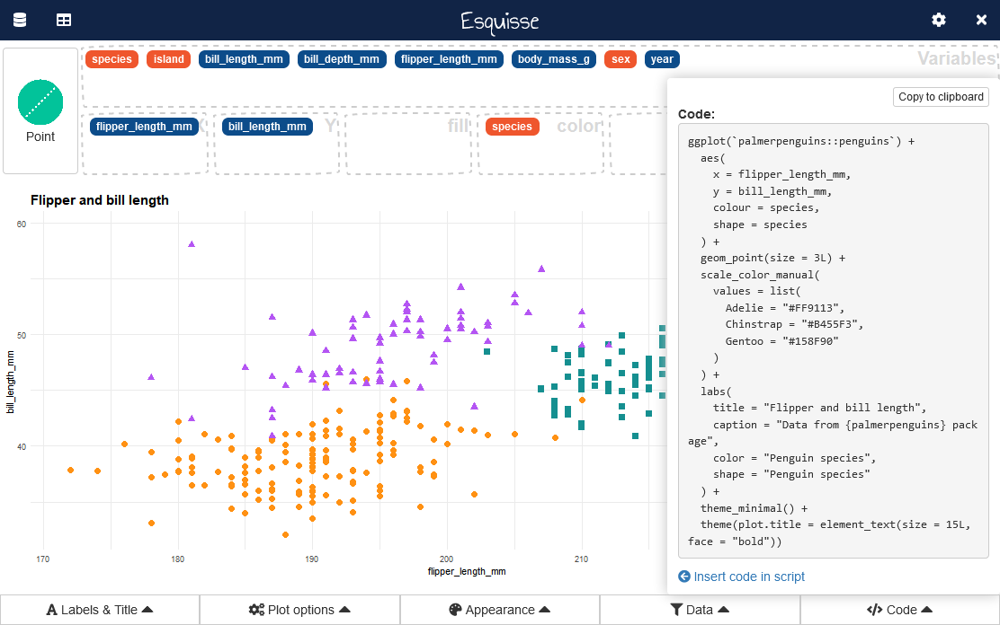
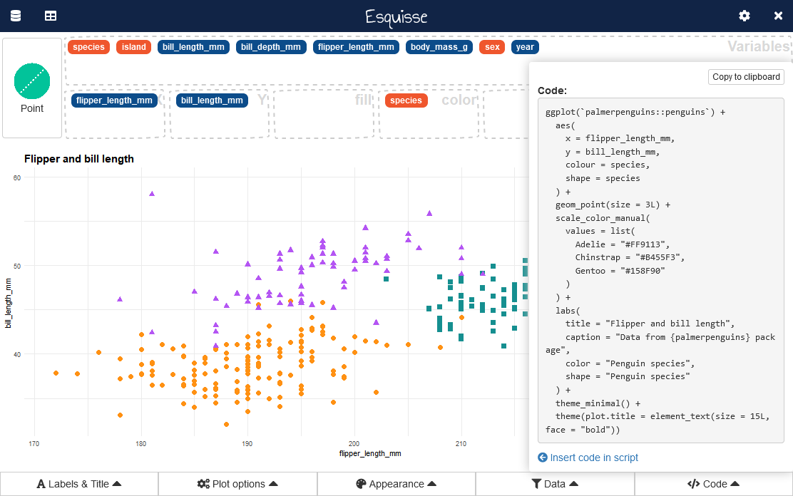
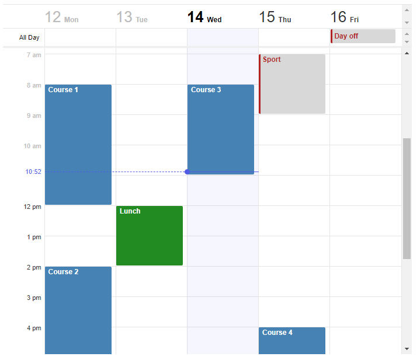
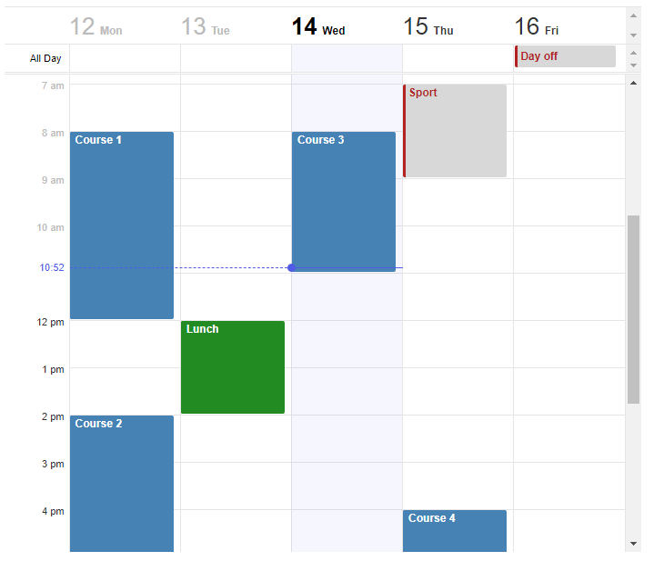

Other cool things you can do with Shiny
Awesome Shiny Extensions
This comprehensive curated list of Awesome SHiny Extensions is a good source for cool widgets and extensions to take your Shiny app to the next level!
Tip: It is easy to get carried away with all the little fun things that Shiny has to offer! Remember to keep track of time for your project, and not allow them to distract you from the final product!
Below are a few highlights:
Other dashboard frameworks
argonDash
tablerDash
Layout features
fullPage

gridPage
Works similarly to fluidPage() in another grid type format.

UI Components
slickR
Great option for carousels!
shinyWidgets
A library of nicer looking widgets than the native built in widgets you get with the shiny package. A full demo of the library is available here.
shinyPanels
Collapsible shiny panels.

spsComps
Cool Bootstrap 3 component - may not be compatible with bs4dash - use at your own risk!
shinyFiles
Allows a button for you to access and browse files on the system.
directoryInput
shinyTime
Allows you to input time in HH:MM:SS format

shinySelect
Has nicer select options. You can use fontawesome icons!
Other
fontawesome
Lots of cool icons to add to buttons, titles…anything!
---
title: "Font Awesome in R Markdown"
output: html_document
---
# Just a few tests with `<svg aria-hidden="true" role="img" viewBox="0 0 448 512" style="height:1em;width:0.88em;vertical-align:-0.125em;margin-left:auto;margin-right:auto;font-size:inherit;fill:forestgreen;overflow:visible;position:relative;"><path d="M48 56c0-13.3-10.7-24-24-24S0 42.7 0 56V456c0 13.3 10.7 24 24 24s24-10.7 24-24V124.2l12.5-2.4c16.7-3.2 31.5-8.5 44.2-13.1l0 0 0 0c3.7-1.3 7.1-2.6 10.4-3.7c15.2-5.2 30.4-9.1 51.2-9.1c25.6 0 43 6 63.5 13.3l.5 .2c20.9 7.4 44.8 15.9 79.1 15.9c32.4 0 53.7-6.8 90.5-19.6V342.9l-9.5 3.3c-41.5 14.4-55.2 19.2-81 19.2c-25.7 0-43.1-6-63.6-13.3l-.6-.2c-20.8-7.4-44.8-15.8-79-15.8c-16.8 0-31 2-43.9 5c-12.9 3-20.9 16-17.9 28.9s16 20.9 28.9 17.9c9.6-2.2 20.1-3.7 32.9-3.7c25.6 0 43 6 63.5 13.3l.5 .2c20.9 7.4 44.8 15.9 79.1 15.9c34.4 0 56.4-7.7 97.8-22.2c7.5-2.6 15.5-5.4 24.4-8.5l16.2-5.5V360 72 38.4L416.2 49.3c-9.7 3.3-18.2 6.3-25.7 8.9c-41.5 14.4-55.2 19.2-81 19.2c-25.7 0-43.1-6-63.6-13.3l-.6-.2c-20.8-7.4-44.8-15.8-79-15.8c-27.8 0-48.5 5.5-66.6 11.6c-4.9 1.7-9.3 3.3-13.6 4.8c-11.9 4.3-22 7.9-34.7 10.3L48 75.4V56z"/></svg>`{=html}
It works well in headings...
# `<svg aria-hidden="true" role="img" viewBox="0 0 581 512" style="height:1em;width:1.13em;vertical-align:-0.125em;margin-left:auto;margin-right:auto;font-size:inherit;fill:steelblue;overflow:visible;position:relative;"><path d="M581 226.6C581 119.1 450.9 32 290.5 32S0 119.1 0 226.6C0 322.4 103.3 402 239.4 418.1V480h99.1v-61.5c24.3-2.7 47.6-7.4 69.4-13.9L448 480h112l-67.4-113.7c54.5-35.4 88.4-84.9 88.4-139.7zm-466.8 14.5c0-73.5 98.9-133 220.8-133s211.9 40.7 211.9 133c0 50.1-26.5 85-70.3 106.4-2.4-1.6-4.7-2.9-6.4-3.7-10.2-5.2-27.8-10.5-27.8-10.5s86.6-6.4 86.6-92.7-90.6-87.9-90.6-87.9h-199V361c-74.1-21.5-125.2-67.1-125.2-119.9zm225.1 38.3v-55.6c57.8 0 87.8-6.8 87.8 27.3 0 36.5-38.2 28.3-87.8 28.3zm-.9 72.5H365c10.8 0 18.9 11.7 24 19.2-16.1 1.9-33 2.8-50.6 2.9v-22.1z"/></svg>`{=html} H1 Heading
## `<svg aria-hidden="true" role="img" viewBox="0 0 581 512" style="height:1em;width:1.13em;vertical-align:-0.125em;margin-left:auto;margin-right:auto;font-size:inherit;fill:steelblue;overflow:visible;position:relative;"><path d="M581 226.6C581 119.1 450.9 32 290.5 32S0 119.1 0 226.6C0 322.4 103.3 402 239.4 418.1V480h99.1v-61.5c24.3-2.7 47.6-7.4 69.4-13.9L448 480h112l-67.4-113.7c54.5-35.4 88.4-84.9 88.4-139.7zm-466.8 14.5c0-73.5 98.9-133 220.8-133s211.9 40.7 211.9 133c0 50.1-26.5 85-70.3 106.4-2.4-1.6-4.7-2.9-6.4-3.7-10.2-5.2-27.8-10.5-27.8-10.5s86.6-6.4 86.6-92.7-90.6-87.9-90.6-87.9h-199V361c-74.1-21.5-125.2-67.1-125.2-119.9zm225.1 38.3v-55.6c57.8 0 87.8-6.8 87.8 27.3 0 36.5-38.2 28.3-87.8 28.3zm-.9 72.5H365c10.8 0 18.9 11.7 24 19.2-16.1 1.9-33 2.8-50.6 2.9v-22.1z"/></svg>`{=html} H2 Heading
### `<svg aria-hidden="true" role="img" viewBox="0 0 581 512" style="height:1em;width:1.13em;vertical-align:-0.125em;margin-left:auto;margin-right:auto;font-size:inherit;fill:steelblue;overflow:visible;position:relative;"><path d="M581 226.6C581 119.1 450.9 32 290.5 32S0 119.1 0 226.6C0 322.4 103.3 402 239.4 418.1V480h99.1v-61.5c24.3-2.7 47.6-7.4 69.4-13.9L448 480h112l-67.4-113.7c54.5-35.4 88.4-84.9 88.4-139.7zm-466.8 14.5c0-73.5 98.9-133 220.8-133s211.9 40.7 211.9 133c0 50.1-26.5 85-70.3 106.4-2.4-1.6-4.7-2.9-6.4-3.7-10.2-5.2-27.8-10.5-27.8-10.5s86.6-6.4 86.6-92.7-90.6-87.9-90.6-87.9h-199V361c-74.1-21.5-125.2-67.1-125.2-119.9zm225.1 38.3v-55.6c57.8 0 87.8-6.8 87.8 27.3 0 36.5-38.2 28.3-87.8 28.3zm-.9 72.5H365c10.8 0 18.9 11.7 24 19.2-16.1 1.9-33 2.8-50.6 2.9v-22.1z"/></svg>`{=html} H3 Heading
#### `<svg aria-hidden="true" role="img" viewBox="0 0 581 512" style="height:1em;width:1.13em;vertical-align:-0.125em;margin-left:auto;margin-right:auto;font-size:inherit;fill:steelblue;overflow:visible;position:relative;"><path d="M581 226.6C581 119.1 450.9 32 290.5 32S0 119.1 0 226.6C0 322.4 103.3 402 239.4 418.1V480h99.1v-61.5c24.3-2.7 47.6-7.4 69.4-13.9L448 480h112l-67.4-113.7c54.5-35.4 88.4-84.9 88.4-139.7zm-466.8 14.5c0-73.5 98.9-133 220.8-133s211.9 40.7 211.9 133c0 50.1-26.5 85-70.3 106.4-2.4-1.6-4.7-2.9-6.4-3.7-10.2-5.2-27.8-10.5-27.8-10.5s86.6-6.4 86.6-92.7-90.6-87.9-90.6-87.9h-199V361c-74.1-21.5-125.2-67.1-125.2-119.9zm225.1 38.3v-55.6c57.8 0 87.8-6.8 87.8 27.3 0 36.5-38.2 28.3-87.8 28.3zm-.9 72.5H365c10.8 0 18.9 11.7 24 19.2-16.1 1.9-33 2.8-50.6 2.9v-22.1z"/></svg>`{=html} H4 Heading
##### `<svg aria-hidden="true" role="img" viewBox="0 0 581 512" style="height:1em;width:1.13em;vertical-align:-0.125em;margin-left:auto;margin-right:auto;font-size:inherit;fill:steelblue;overflow:visible;position:relative;"><path d="M581 226.6C581 119.1 450.9 32 290.5 32S0 119.1 0 226.6C0 322.4 103.3 402 239.4 418.1V480h99.1v-61.5c24.3-2.7 47.6-7.4 69.4-13.9L448 480h112l-67.4-113.7c54.5-35.4 88.4-84.9 88.4-139.7zm-466.8 14.5c0-73.5 98.9-133 220.8-133s211.9 40.7 211.9 133c0 50.1-26.5 85-70.3 106.4-2.4-1.6-4.7-2.9-6.4-3.7-10.2-5.2-27.8-10.5-27.8-10.5s86.6-6.4 86.6-92.7-90.6-87.9-90.6-87.9h-199V361c-74.1-21.5-125.2-67.1-125.2-119.9zm225.1 38.3v-55.6c57.8 0 87.8-6.8 87.8 27.3 0 36.5-38.2 28.3-87.8 28.3zm-.9 72.5H365c10.8 0 18.9 11.7 24 19.2-16.1 1.9-33 2.8-50.6 2.9v-22.1z"/></svg>`{=html} H5 Heading
...and works equally well within inline text: `<svg aria-hidden="true" role="img" viewBox="0 0 581 512" style="height:1em;width:1.13em;vertical-align:-0.125em;margin-left:auto;margin-right:auto;font-size:inherit;fill:steelblue;overflow:visible;position:relative;"><path d="M581 226.6C581 119.1 450.9 32 290.5 32S0 119.1 0 226.6C0 322.4 103.3 402 239.4 418.1V480h99.1v-61.5c24.3-2.7 47.6-7.4 69.4-13.9L448 480h112l-67.4-113.7c54.5-35.4 88.4-84.9 88.4-139.7zm-466.8 14.5c0-73.5 98.9-133 220.8-133s211.9 40.7 211.9 133c0 50.1-26.5 85-70.3 106.4-2.4-1.6-4.7-2.9-6.4-3.7-10.2-5.2-27.8-10.5-27.8-10.5s86.6-6.4 86.6-92.7-90.6-87.9-90.6-87.9h-199V361c-74.1-21.5-125.2-67.1-125.2-119.9zm225.1 38.3v-55.6c57.8 0 87.8-6.8 87.8 27.3 0 36.5-38.2 28.3-87.8 28.3zm-.9 72.5H365c10.8 0 18.9 11.7 24 19.2-16.1 1.9-33 2.8-50.6 2.9v-22.1z"/></svg>`{=html}.The code above produces this:
esquisse
Makes ggplot a breeze!
 

toastui
Fantastic interactive calendar widget.


 
